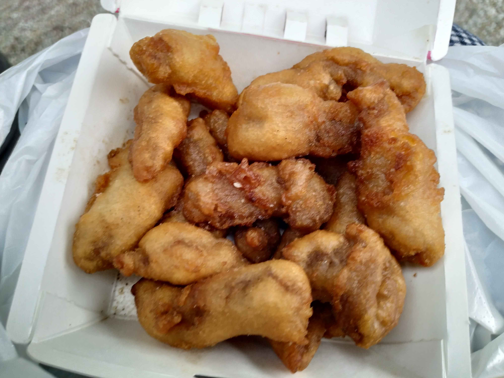
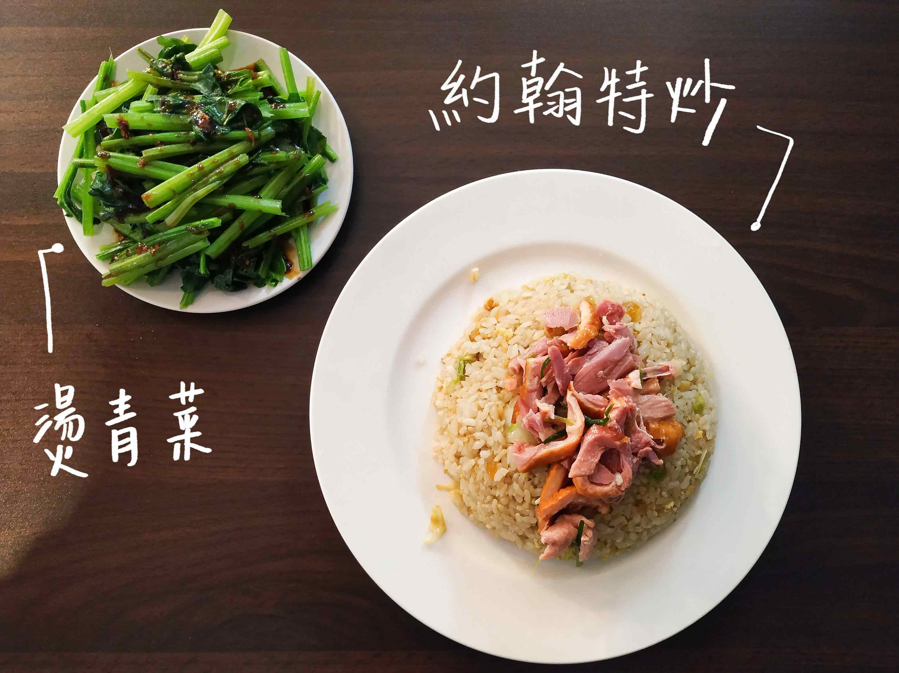

雖然離上次連假已經一個多月了
但是我現在才把連假的遊記打完哈哈 好廢
我們這次是突發狀況 228連假的第一天 突然想說要不要去哪玩呢?
因此就搭上了隔天從台北往宜蘭羅東的客運
那麼廢話不多說
我們從科技大樓搭乘一點多快兩點的噶瑪蘭客運
大約下午3出的時候到了羅東轉運站
本來想要先租個機車的
但是沒想到全部都沒車了嗚嗚
所以決定先去吃點小吃
等到快五點的時候再回去看看有沒有車
第一站 可口點心

一家路邊小店 只是剛好經過就走進來了
外觀是半開放式的有點可愛
點了一個刈包跟金針排骨湯
刈包有肥肉也有瘦肉 金針排骨湯好像是很大鍋一直在煮 味道都有出來
是一家蠻不錯的點心店
詳細資訊
可口點心營業時間📞:11:00~02:00
可口點心位置🏠:265宜蘭縣羅東鎮大同路1之1號 點我看GOOGLE地圖
可口點心臉書:點我看臉書
OK 接下來才是我們本來預計要前往的小吃店 不小心在半路上耽擱了一下
第二站 財記臭豆腐
哇 看到這個人潮 真的是要跪了
都排到旁邊的小吃攤前面了
不過還好如果要外帶的話 速度就快多了
所以秒決定改外帶
我們的選擇是~起司堡臭豆腐$25 跟 脆皮臭豆腐$40
脆皮臭豆腐的個人覺得就是還不錯的臭豆腐啦 但是我說不上有甚麼比較驚豔的地方
但是起司堡臭豆腐我覺得蠻特別的
他應該是把臭豆腐放進起酥片裡面再拿去烤 就是起司濃湯的起酥
口感也很酷 而且價錢又便宜 蠻值得一試的
詳細資訊
財記臭豆腐營業時間📞:週三~週一 14:00~22:00
財記臭豆腐位置🏠:265宜蘭縣羅東鎮公正路110號 點我看GOOGLE地圖
財記臭豆腐臉書:點我看臉書
第三站 煎餅哥煎餅果子
這個是排臭豆腐的時候 被吸引到的哈哈
順便也買一下 不過因為他攤位外基本上都是排臭豆腐的人 所以照片都是人
我們的選擇是~叉燒豬肉煎餅$65
這個很特別的是它裡面有加蠻多種東西的
像是生菜、炸油條?、肉、蔥之類的(現在有點忘記哈哈)
外皮是蛋皮 上面撒芝麻粒
吃起來清爽好吃 有肉又有菜
不過剛做好的很燙 要小心吃唷
詳細資訊
煎餅哥煎餅果子電話📞:039565888
煎餅哥煎餅果子位置🏠:265宜蘭縣羅東鎮公正路110號 點我看GOOGLE地圖
吃完煎餅後 也差不多快要五點了
剛好已經有人還車了 終於可以租到機車了
這邊租機車我覺得沒有很貴 一天大概500多吧
如果超時的話就看小時補時間的價錢就可以了
租好機車後就決定先去民宿放東西(雖然東西不多ㄎㄎ)
因為我們是臨時起意的 所以訂的房間不在羅東車站附近
不過其實騎機車很快 約莫10分鐘左右就到了
第四站 民宿木棉庭園會館
詳細的住宿可以參考另一篇文章👇
點我看民宿文章


回到民宿後混了一下 決定去附近的冬山河親水公園走走
不過我忘了拍照哈哈 就是沿著冬山河隨意走走
因為是傍晚 所以人也沒有很多 算是蠻愜意的
第五站 伊丼-日式丼飯
接下來就是要去吃晚餐囉(行程就是一直吃哈哈)
晚餐的話我們去吃一家看起來蠻可愛的日式小店
但是由於下午吃很飽 所以只有點一個定食跟一些點心
一樣詳細的晚餐可以參考另一篇文章👇
點我看伊丼-日式丼飯
第六站 村卻國際溫泉酒店 THE ROOF 190
吃完晚餐在附近隨意走走後 決定到羅東最高的建築物上面去喝酒
於是我們就走了過去 雖然有點遠 不過就順便消化一下
夜景是真的蠻漂亮的 不過我的手機畫質有點渣
如果是單論看夜景的話是蠻推薦的唷
詳細的酒吧可以參考另一篇文章👇
點我看村卻國際溫泉酒店 THE ROOF 190
同場加映 宵夜篇
去完酒吧 接下來就要買宵夜回去吃囉!!!
每到宜蘭一定要吃的糕渣跟卜肉 我超愛的❤
糕渣吃起來就是軟軟嫩嫩的 鹹甜鹹甜 口感跟炸鮮奶有點像
店員蠻有趣的 如果有買糕渣的話 他就會對你說 糕渣燙口，燙到痛三天
不過吃的時候真的要小心 剛炸好的真的超燙 不過趁熱吃真的好好吃唷
卜肉也是炸的 吃起來也是鹹甜鹹甜 真的是每次來宜蘭必吃的
不過照片是隔天離開前再買一次時拍的哈哈(真的太喜歡吃了)
卜肉 💰100 
糕渣 💰100
我通常都吃小春的，不曉得其他店家是不是味道一樣
小春在羅東夜市跟礁溪都有店
阿 他的皮蛋也很好吃唷👍👍
詳細資訊
小春卜肉位置🏠:265宜蘭縣羅東鎮羅東夜市內 點我看GOOGLE地圖
第七站 約翰兄弟2號店
隔天早上不小心睡太晚了 所以沒有吃到民宿附的早餐
雖然有點小可惜 不過我們就直接去吃了午餐
排隊超久的炒飯~~

詳細的可以參考另一篇文章👇
點我看約翰兄弟2號店
第八站 ASAKUSA泡麵+B
吃飽喝足就要去咖啡店廢一下囉
其實是我之前剛好在ig上看到 很久之前就收藏的店家
他在小巷子裡面 沒有google map真的是找不到呢
我懷疑他有改裝過 以前好像跟現在不太一樣
不過現在這樣比較可愛哈哈
詳細的可以參考另一篇文章👇
點我看ASAKUSA泡麵+B~宜蘭羅東咖啡廳
第八站 羅東文化工場
吃飽喝足的肥宅 也是要走走的
這個是一個蠻現代化建築的地點
可以往上走觀看羅東的景致
不過我們去的時候剛好沒有舉辦展覽
於是只有在建築裡面走走晃晃而已
不過不管有沒有展覽都還蠻推來這裡晃晃的
很多當地人都會來這邊遛小孩(應該是當地人吧)
沒修圖手機拍得有點渣哈哈
詳細資訊
羅東文化工場時間:週二~週日 9:00~17:00
羅東文化工場位置🏠:265宜蘭縣羅東鎮純精路一段96號 點我看GOOGLE地圖
於是乎就這樣不捨的結束兩天一夜的旅程啦
又要回去當個社畜了嗚嗚嗚 希望大家開開心心出遊平平安安回家囉